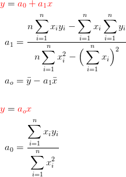
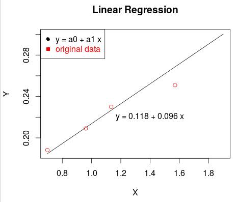
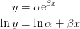
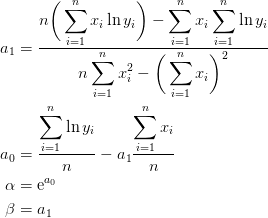
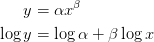
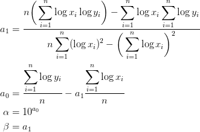
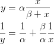
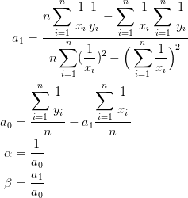

Week.12 : R 언어를 이용한 수치해석(회귀분석) Numerical Methods with R (Regression Analysis)
Table of ContentsR 언어를 이용한 수치해석(회귀분석) Numerical Methods with R (Regression Analysis)
선형회귀분석 Linear Regression Analysis
선형회귀식의 원리는 회귀식의 편차 자승의 합이 최소가 되도록 하는 것이다. 이러한 원리로 유도된 선형회귀식은 아래와 같다.
Ordinary Least Squares (OLS)
(OLS)는 가장 단순하고 많이 쓰이는 추정 방법이다. 이는 개념적으로 단순하고, 계산이 간단하다. OLS 추정은일반적으로 실험이나 관측치에 적용하고자 할 때 사용한다. 이러한 원리로 유도된 선형회귀식은 아래와 같다.

a0 : 선형회귀식 상수
a1 : 선형회귀식 상수
xi : 독입변수
yi : 종속변수
: 독립변수 평균
: 종속변수 평균
예제 Example
library("stringr") # Useage
rm(list = ls()) # remove all environment objects
x <- c(0.698132, 0.959931, 1.134464, 1.570796, 1.919862)
y <- c(0.188224, 0.209138, 0.230052, 0.250965, 0.313707)
x.sq <- x^2
xy <- x*y
n <-length(x)
sum.x <- sum(x)
sum.y <- sum(y)
sum.xy <- sum(xy)
sum.x.sq <- sum(x.sq)
a1 <- (n*sum.xy-sum.x*sum.y)/(n*sum.x.sq-sum.x^2)
a0 <- sum.y/n - a1*sum.x/n
lin.f <- function(a0, a1, x){
y <- a0 + a1 * x
return(y)
}
x.new <- seq(0.7, 1.9, length=30)
y.new <- lin.f(a0, a1, x.new)
plot(x.new, y.new, type = "l", xlab = "X", ylab = "Y", main = "Linear Regression")
lines(x, y, type = "p", col="red")
legend("topleft",legend=c("y = a0 + a1 x","original data"),
text.col=c("black","red"),pch=c(16,15),col=c("black","red"))
# text
a0.round <- round(a0, digits = 3)
a1.round <- round(a1, digits = 3)
text.eq <- str_c("y = ", a0.round, " + ", a1.round, " x")
text(1.2,0.22, text.eq)

비선형회귀분석 NonLinear Regression Analysiis
자료를 도식하여 독립변수와 종속변수가 선형이면 좋겠지만, 그렇지 않는 경우가 있다. 자료의 도식후 비선형 관계라는 것을 직관적으로 확인했을 경우, 비선형 관계식을 이용해야 하는데, 이럴 경우 비선형 방정식을 선형화한 다음 위의 선형회귀식을 이용하여 비선형방정식 유도가 가능하다.
지수방정식 Exponential equation
다음과 같은 지수방정식의 형태를 아래와 같이 자연로그를 취하면 선형화 시킬 수 있다.


예제 Example
# exponential equation 지수방정식
library("stringr") # Useage
rm(list = ls()) # remove all environment objects
x <- c(0, 1, 3, 5, 7, 9)
y <- c(1, 0.891, 0.708, 0.562, 0.447, 0.355)
n <- length(x)
y.ln <- log(y)
sum.x <- sum(x)
sum.ln.y <- sum(y.ln)
sum.x.ln.y <- sum(x*y.ln)
sum.x.sq <- sum(x^2)
a1 <- (n*sum.x.ln.y - sum.x*sum.ln.y)/(n*sum.x.sq - sum.x^2)
a0 <- sum.ln.y/n - a1*sum.x/n
alpha <- exp(a0)
beta <- a1
f.ex <- function(alpha, beta, x){
y <- alpha*exp(beta*x)
return(y)
}
x.new <- seq(0, 9, length=100)
y.new <- f.ex(alpha, beta, x.new)
plot(x, y, type = "p", xlab = "X", ylab = "Y", col="red", main = "Exponential")
lines(x.new, y.new, type = "l")
legend("topleft",legend=c("y = alpha e^ (beta x)","original data"),
text.col=c("black","red"),pch=c(16,15),col=c("black","red"))
# text
alpha.round <- round(alpha, digits = 4)
beta.round <- round(beta, digits = 4)
text.eq <- str_c("y = ", alpha.round, " e^ (", beta.round, "x)")
text(4,0.8, text.eq)

멱방정식 Power equation
멱방정식은 양변에 상용로그를 취하면 선형화 시킬 수 있다.


a0 : 선형회귀식 상수
a1 : 선형회귀식 상수
xi : 독입변수
yi : 종속변수
α : 지수방정식 상수
β : 지수방정식 상수
예제 Example
# Power equation 멱방정식
library("stringr") # Useage
rm(list = ls()) # remove all environment objects
x <- c(10, 20, 30, 40, 50, 60, 70, 80)
y <- c(25, 70, 380, 550, 610, 1220, 830, 1450)
n <- length(x)
x.log <- log10(x)
y.log <- log10(y)
sum.log.x <- sum(x.log)
sum.log.y <- sum(y.log)
sum.log.xy <- sum(x.log*y.log)
sum.log.x.sq <- sum(x.log^2)
a1 <- (n*sum.log.xy - sum.log.x*sum.log.y)/(n*sum.log.x.sq - sum.log.x^2)
a0 <- sum.log.y/n - a1*sum.log.x/n
alpha <- 10^a0
beta <- a1
f.ex <- function(alpha, beta, x){
y <- alpha*x^beta
return(y)
}
x.new <- seq(10, 80, length=100)
y.new <- f.ex(alpha, beta, x.new)
plot(x, y, type = "p", xlab = "X", ylab = "Y", col="red", main = "Power Equation")
lines(x.new, y.new, type = "l")
legend("topleft",legend=c("y = ax^b","original data"),
text.col=c("black","red"),pch=c(16,15),col=c("black","red"))
# text
alpha.round <- round(alpha, digits = 3)
beta.round <- round(beta, digits = 3)
text.eq <- str_c("y = ", alpha.round, " x^", beta.round)
text(50,300, text.eq)

포화성장률 방정식 Saturation-growth-rate equation
포화성장률 방정식은 양변을 역수를 취하면 선형화 시킬 수 있다. x, y 데이터가 0을 포함해서는 안된다.


예제 Example
# Saturation-growth-rate equation 포화성장률 방정식
# zero is unacceptable for data(x, y)
library("stringr") # Useage
rm(list = ls()) # remove all environment objects
x <- c( 1, 3, 5, 7, 9)
y <- c( 2.1, 3.0, 3.3, 3.49, 3.52)
n <- length(x)
y.in <- 1/y
x.in <- 1/x
sum.x.in <- sum(x.in)
sum.y.in <- sum(y.in)
sum.xy.in <- sum(x.in*y.in)
sum.x.in.sq <- sum(x.in^2)
a1 <- (n*sum.xy.in - sum.x.in*sum.y.in)/(n*sum.x.in.sq - sum.x.in^2)
a0 <- sum.y.in/n - a1*sum.x.in/n
alpha <- 1/a0
beta <- a1/a0
f.ex <- function(alpha, beta, x){
y <- alpha*x/(beta+x)
return(y)
}
x.new <- seq(0, 8, length=100)
y.new <- f.ex(alpha, beta, x.new)
plot(x, y, type = "p", xlab = "X", ylab = "Y", col="red", main = "Saturation-growth-rate Equation")
lines(x.new, y.new, type = "l")
legend("topleft",legend=c("y = alpha x / (beta + x)","original data"),
text.col=c("black","red"),pch=c(16,15),col=c("black","red"))
# text
alpha.round <- round(alpha, digits = 4)
beta.round <- round(beta, digits = 4)
text.eq <- str_c("y = ", alpha.round, " x / (", beta.round, " + x)")
text(5,2.8, text.eq)

Reference